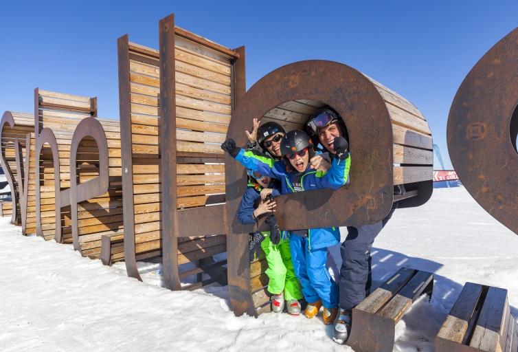

Le domaine Les Sybelles fait parti des plus grands domaines skiables interconnectés.1er domaine de Maurienne et 4e plus grand domaine relié de France.
Avec ses 393 ha et ses panoramas à 360° sur les Alpes, le domaine skiable Les Sybelles vous attend.
Le domaine a été créé par Gaston Maulin en décembre 2003.
Plus grand domaine skiable de Maurienne et le 4e plus grand de France avec 67 remontées mécaniques et 136 pistes pour tous les niveaux entre 1100 et 2620 mètres d’altitude. Le domaine conviendra parfaitement aux débutants et aux familles puisqu’il est possible d’emprunter uniquement des pistes bleues depuis son plus haut sommet, ou au choix, des pistes rouges et noires pour une pratique du ski plus engagée. Aux Sybelles, tout est fait pour faciliter l’apprentissage du ski et la prise en charge des débutants de tout âge. Les espaces ludiques sont dédiés au plus grand nombre avec 1 snowpark, 1 easypark, 2 boardercross, 1 arvapark, 3 pistes freeride, 1 piste ludique des Vikings, 1 espace Snowpy Mountain, 1 Explor Games®, 6 espaces débutants, 2 espaces ludiques luge-ski et 8 jardins des neiges.
Le domaine est composé de 6 stations d'où le nom du domaine "Les Sybelles " :
Voici quelques Chiffres :
- 136 pistes
- 67 remontées mécaniques
- de 1100 m d'altitude à 2620 m
Vous pouvez consulter les ouvertures des pistes en temps réel sur ce site : www.skiplan.com
Consulter les webcams du domaine : www.sybelles.ski/webcams-du-domaine
Voir le plan des pistes interactif (avec ouverture des pistes et des remontées en temps réel) : live.lumiplan.pro/sybelles.php
